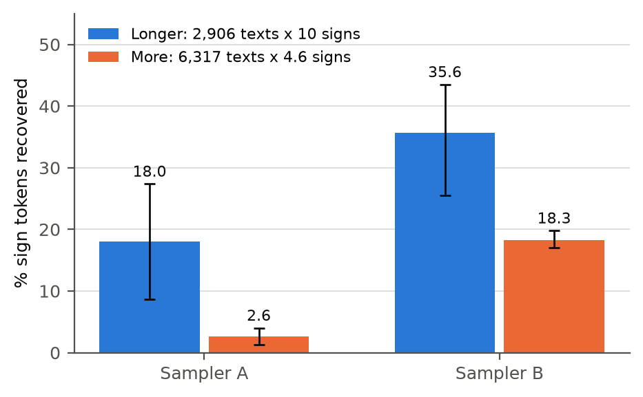

The Indus script was used about 4,500 years ago in what is now Pakistan and north-west India, and nobody has been able to read it. Most inscriptions are only four or five signs long, mostly on small seals, and there is no bilingual text to help. People have proposed readings, and others have used statistics to argue about whether the signs are writing at all. I wanted to check something more basic: would the computer methods people use actually work on texts this short, in a case where the answer is already known?
To test this I built fake Indus-like collections of texts. I took real texts in five languages (Sanskrit, Old Tamil, Sumerian, Latin and Finnish), plus some sign systems that are not language, like coats of arms, and rewrote them in made-up scripts. I tuned each collection to match the published figures for the Indus inscriptions, roughly 2,900 texts of about 4.6 signs each. Then I hid the answers, ran the existing methods, and counted how many signs they got right. Sometimes a method was given a closely related language to work from, sometimes a mix of related and unrelated languages, and sometimes only unrelated ones.

Same total amount of text: 2,906 texts of 10 signs (longer) vs 6,317 texts of 4.6 signs (more), for the two ways of building the collections (A, B). Bars are averages; lines show 95% ranges.
This does not decipher the Indus script or say anything about what language it records. I chose the five languages because their texts were freely available and they cover different language families, not because I think any of them is related. The "related language" I built is much closer to the original than a real relative would be, so those results are on the generous side. I also made some decisions after seeing results, and the full paper lists all of them.
The main thing I took away is that any claim about how hard the Indus script is to decode should say which inscriptions it is talking about, whether it assumes a related language, and what kind of script it assumes. Otherwise the answer can change several times over.
All numbers here come from the test collections I built, not from real Indus inscriptions. The full draft is available on request: arnavgoel@woodstock.ac.in